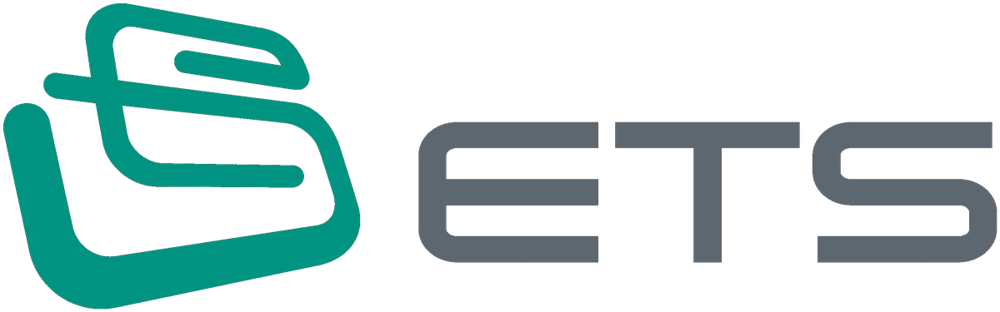

'1GW ESS 대어' 온다···LG엔솔, 3위 탈출 기회 잡나
3사 각축전 예상···'누적 19%' LG엔솔, 반등 절실 '출혈 경쟁' 가능성···일각 '실익 훼손' 우려도 정부가 이달 중 에너지저장장치(ESS) 3차 입찰에 나선다. 이번 물량은 앞선 입찰보다 크게 늘어난 1기가와트(GW) 이상이 될 전망이다. 삼성SDI가 누적 수주에서 앞서고 있지만 SK온이 2차 입찰에서 1위를 차지하며 판도를 흔들었다.

3사 각축전 예상···'누적 19%' LG엔솔, 반등 절실 '출혈 경쟁' 가능성···일각 '실익 훼손' 우려도 정부가 이달 중 에너지저장장치(ESS) 3차 입찰에 나선다. 이번 물량은 앞선 입찰보다 크게 늘어난 1기가와트(GW) 이상이 될 전망이다. 삼성SDI가 누적 수주에서 앞서고 있지만 SK온이 2차 입찰에서 1위를 차지하며 판도를 흔들었다.
Google 검색에서 한국경제 기사를 더 자주 볼 수 있습니다. 세방리튬배터리가 현대자동차 및 LG에너지솔루션으로부터 조 단위 규모의 배터리팩 공급 계약을 수주함에 따라, 모회사 세방전지의 이차전지 중심 사업 포트폴리오 전환이 가속화될 전망입니다. 더 궁금한 점이 있으신가요? 읽으면서 머릿속에 맴돌던 질문들, 앨리스가 대답해 드릴게요.
Google 검색에서 한국경제 기사를 더 자주 볼 수 있습니다. LG에너지솔루션이 서울대와 공동으로 리튬망간리치(LMR) 배터리의 양산 가능성을 높이는 연구 성과를 달성했다고 7일 발표했다. 해당 연구 결과는 세계적 권위의 국제 학술지 ‘네이처 커뮤니케이션스&rsquo... "中企 기술 베끼면 기업 생존 위협"…100억 과징금에 연구개발비 물어내야 앞으로 중소기업의 기술을 베끼거나 빼돌린 기업은 최대 100억원의 과징금을 물게 된다.
머니투데이 증권부가 선정한 8월 다섯째 주(8월31일~9월4일) 베스트리포트는 총 3건입니다. △전유진 iM증권 연구원의 'SK온, 네오볼타 ESS(에너지저장장치) 수주 코멘트'( SK이노베이션 (137,100원 ▼800 -0.58%) ) △정민기 삼성증권 연구원의 '기업가치 제고 계획 업데이트 - 자본 정책 프레임 제시'( DB손해보험 (186,700원 ▼5,700 -2.96%) ) △최관순 SK증권 연구원의 '관심 가져볼 만한 주가'( 롯데지주 (24,500원 ▼350 -1.41%) ) 등입니다. 전유진 iM증권 연구원은 SK이노베이션의 목표주가 19만원과 투자의견 '매수'를 유지했습니다.
2026년 9월 현재, 한국 정부의 전력 전환 기조와 제12차 전력수급기본계획(산업통상자원부, 2023년 발표)이 맞물리면서 전력망의 저장 능력 확대가 산업적 요구로 자리잡았다. 제12차 전력수급기본계획에 따르면 2040년 태양광 설비 목표는 171GW로 설정되었으며, 이 수치는 설비 확대로 인한 계통 불안정 문제를 ESS(에너지저장장치, Energy Storage System) 확대로 해소해야 한다는 구조적 명제를 부여한다. 핵심 결론은 분명하다.
북미 ESS 후발주자 SK온 2027~2031년 5년치 9GWh 물량 수주 중국산 셀 대체 수요 확대, 미국 탈중국 규제가 공급망 재편 촉발
SK이노베이션이 자회사 SK온의 대규모 수주 소식에 힘입어 9월 1일 유가증권시장에서 전 거래일 대비 7.81% 상승한 13만 5천 300원에 장을 마쳤다. 장중 한때 주가는 13만 8천 500원까지 치솟으며 10.36%의 상승률을 기록하기도 했다. 이번 수주는 SK온이 지난 8월 27일 미국 에너지저장장치(ESS) 제조사인 네오볼타 파워와 체결한 공급 계약에 따른 결과다.
글로벌 1위 배터리 기업인 중국 CATL(닝더스다이)이 헝가리 데브레첸(Debrecen)에 대규모 배터리 모듈 및 팩 조립을 위한 신규 공장 건설을 비밀리에 추진 중인 것으로 드러났다.당초 지역사회의 극심한 환경 반발을 의식해 "데브레첸에 더 이상의 배터리 관련 추가 투자는 없을 것"이라고 공언했던 헝가리 정부와 지자체의 약속이 사실상 뒤집히면서, 현지 주 ...
[녹색경제신문 = 박성진 기자] 현대위아가 제조 현장에서 화물 상·하차 작업까지 스스로 수행하는 무인지게차 공급에 나서며 모바일 로봇 시장 공략에 속도를 낸다. 국내에서 완전 무인 상·하역이 가능한 무인지게차가 실제 공급되는 것은 이번이 처음이다.현대위아는 자율주행 기술과 다양한 센서를 집약한 무인지게차를 내년 5월 기아 오토랜드 화성에 최초로 도입·운용한 ...
내년 생활임금 1만2750원...올해(1만 2090원) 대비 5.5% 인상 계약기간 1년 미만 기간제 노동자에 고용 불안정성 보상 수당 지급 정 시장 "노동자가 안심하고 생활할 수 있는 도시 만들 것" 화성특례시(시장 정명근)가 2027년도 생활임금을 올해보다 5.5% 오른 시간당 1만2750원으로 확정하고, 1년 미만 기간제 노동자의 고용 불안정과 퇴직금 사각지대를 보완하기 위한 ‘화성형 공정수당’도 새로 도입한다. 8일 시에 따르면 내년도 생활임금은 하루 8시간, 주 40시간 근무를 기준으로 월 209시간을 적용하면 266만4750원이며 화성특례시 소속 노동자와 시 출자·출연기관 소속 노동자 등 생활임금 적용 대상에게 지급된다.
글로벌 제조 및 자동차 산업군을 중심으로 물류 자동화 전환이 가속화되는 가운데, 중량 화물의 상·하역 작업까지 자율적으로 수행하는 완전 무인 지게차가 국내 산업 현장에 본격 도입된다. 현대위아(Hyundai WIA)는 화물차에 물품을 스스로 적재하고 내릴 수 있는 기술을 구현한 무인지게차 공급을 개시하며, 내년 5월 기아 오토랜드 화성(Kia AutoLand Hwaseong) 공장에서 첫 가동에 들어간다. 국내 제조 현장에서 상·하역을 포함한 전 과정을 완벽히 무인화한 지게차가 투입되는 사례는 이번이 처음이다. ◈ 정밀 센서·알고리즘 기반의 4톤급 무인 상·하역 시스템 이번에 선보인 무인지게차는 공장 내부 이동에 국한되던 기존 자율주행 장비의 한계를 넘어, 화물차 적재함
현대위아가 완전 무인으로 상하역이 가능한 지게차를 개발했다. 국내 최초 사례로 내년 5월부터 기아 오토랜드 화성에서 운용한다. 라이다와 비전 센서, 안전 스캐너를 장착해 작업자 개입 없이 공장 내부를 자율주행하며 팔레트 적재와 상하차 작업까지 무인으로 수행한다. 최대 적재량은 4톤으로 산업 제조 현장에서 가장 흔하게 쓰이는 중형 지게차의 최대 적재 하중과 비슷하다.
현대위아가 모바일 로봇 브랜드 ‘H-Motion(에이치모션)’의 라인업을 무인지게차로 확장하며 산업 현장의 물류 자동화 시장 공략을 본격화한다. 현대위아는 국내 최초로 완전 무인 상·하역이 가능한 무인지게차 공급에 성공했으며, 해당 장비는 내년 5월 기아 오토랜드 화성에 최초 도입되어 운용될 예정이라고 7일 밝혔다. 이번에 공급하는 무인지게차는 현대위아의 자율주행 물류로봇(AMR) 양산 노하우를 기반으로 개발됐다.
폭스바겐그룹이 독일 공장 1곳을 매각해 군수품 생산 시설로 전환한다. 중국 시장 부진과 미국 관세 여파에 대응하고 미래 성장 동력을 마련하기 위한 조치로 풀이된다. 독일 경제지 등에 따르면 폭스바겐그룹은 이스라엘 투자사 아우렐리우스 캐피털과 그룹 2대 주주 니더작센주 정부에 독 일 오스나브뤼크 공장을 양도하기로 합의했다. 아우렐리우스는 방공시스템 아이언돔을 생산하는 이스라엘 국영업체 라파엘 어드밴스트 디펜스 시스템스(라파엘)와 이 공장에서 첫 번째 프로젝트를 계획하고 있는 것으로 전해졌다.
(세종=연합뉴스) 안채원 기자 = 올해 들어 7월까지 관세 당국에 적발된 탈세 및 법규 위반 규모가 1조760억원으로 집계됐다. 작년 연간 적발 실적의 약 40% 수준이다. 관세청은 7일 정부대전청사에서 '전국 관세조사 관계관 회의'를 열고 이 같은 올해 관세조사 운용 실적을 점검하고 향후 추진 방향을 논의했다고 8일 밝혔다.
(창원=연합뉴스) 이정훈 기자 = 경남도가 투자협약 체결 후 실제 투자에 나선 기업을 지원하는 지방투자촉진보조금 집행률이 지난해의 경우 편성 예산의 절반에도 미치지 못한 것으로 나타났다. 경남도의회 경제환경위원회는 2025년 회계연도 경남도 결산심사를 하며 지방투자촉진보조금 미집행 문제를 지적했다고 8일 밝혔다. 지방투자촉진보조금은 수도권에서 경남으로 본사·공장·연구소를 이전하거나 신증설 투자 협약을 한 기업이 공장·설비 착공 신고일로부터 3개월 이내 또는 입지 계약 체결일로부터 1년 이내에 지급한다.
방탄소년단(BTS)이 북미를 제대로 물들였다. BTS는 9월 1일과 2일, 5일과 6일 미국 캘리포니아주 소파이 스타디움에서 열린 'BTS WORLD TOUR ARIRANG IN LOS ANGELES'를 끝으로 북미 투어를 마무리했다. LA 콘서트에는 28만 2000여 명이 운집했다. BTS는 총 8회 공연으로 소파이 스타디움 최다